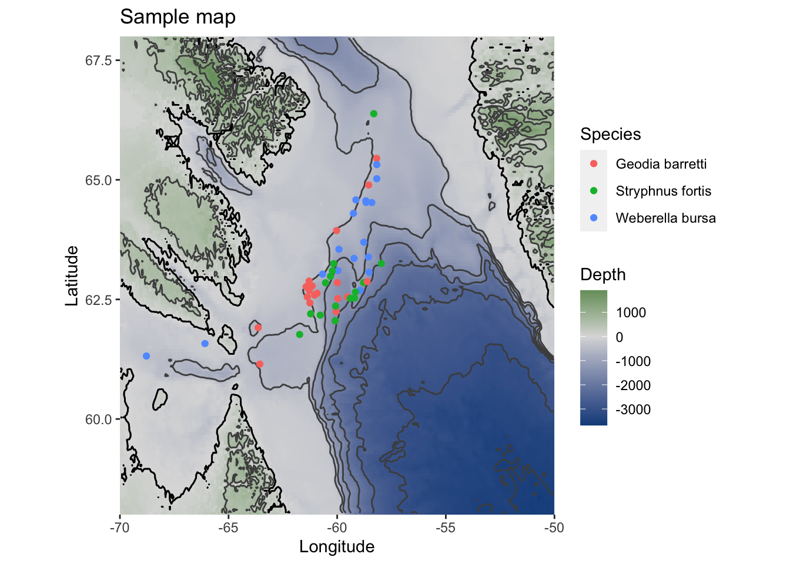

1 Content
This is a set of code and data sets to document and reproduce the computational analyses in Steffen et al., 2020. In brief, it contains three parts: the metabolome, microbiota and inter-omics analyses. For the metabolome, we include detailed descriptions of the metabolomics data acquisition, data processing with xcms, and multivariate analyses with ropls. In addition, signals of known and novel compounds of interest were manually extracted and analysed. For the microbiota, we include community visualisation and ecological analyses in vegan. The inter-omics section contains mantel test and procrustes rotations, as well as the microbial interaction network annotated with the OTU’s correlation with barettin, and their response to depth.
1.1 Experimental setup
Three demosponge species Geodia barretti (n=20), Stryphnus fortis (n=15), and Weberella bursa (n=17) were sampled in the Davis Strait between Canada and Greenland (61.147942-66.38245 Lat,-68.78077- -57.96573 Lon) from 244 m to 1467 m depth. Temperature and salinity in situ were recorded. All sample metadata is deposited at PANGAEA. All data for these analyses can be downloaded here. xfun::embed_dir(‘data/’, text = ‘Download full data’) EMBEDDED_DATA
1.1.1 Map
library(ggplot2)
library(ggmap)
library(maps)
library(mapdata)
library(marmap)
library(ggrepel)
sample_coords <- read.csv("data/Steffen_et_al_metadata_PANGAEA.csv", header = T,
sep = ";")
sample_coords <- sample_coords[, c("Species", "unified_ID", "Latitude", "Longitude")]
sample_coords <- na.omit(sample_coords)
map_data <- getNOAA.bathy(-70, -50, 58, 68, resolution = 4, keep = T, antimeridian = FALSE)
sample_map_1 <- autoplot(map_data, geom = c("r", "c")) + scale_fill_gradient2(low = "dodgerblue4",
mid = "gainsboro", high = "darkgreen") + geom_point(aes(x = sample_coords$Longitude,
y = sample_coords$Latitude, colour = factor(sample_coords$Species)), data = sample_coords) +
ggtitle("Sample map") + xlab("Longitude") + ylab("Latitude") + labs(fill = "Depth",
col = "Species")
sample_map_1
# with labels: sample_map_1+geom_label_repel(aes(x=sample_coords$Longitude,
# y=sample_coords$Latitude, label = sample_coords$unified_ID), box.padding =
# 0.35, point.padding = 0.5, data=sample_coords)
library("sf")
library("rnaturalearth")
library("rnaturalearthdata")
world <- ne_countries(scale = "medium", returnclass = "sf")
sample_map2 <- ggplot(data = world) + geom_sf() + coord_sf(xlim = c(-95, 0), ylim = c(45,
75), expand = T) + geom_point(data = sample_coords, aes(x = sample_coords$Longitude,
y = sample_coords$Latitude)) + annotate("rect", xmin = -68.78077, xmax = -57.96573,
ymin = 61.147942, ymax = 66.38245, alpha = 0.2) + ggtitle("Sample map") + xlab("Longitude") +
ylab("Latitude")
sample_map2# 3D map
library(marmap)
library(lattice) #for wireframe
# map_data_hires<-getNOAA.bathy(-70,-50,58,68, resolution = 1, keep=T,
# antimeridian=FALSE) wireframe(unclass(map_data_hires), shade=T, aspect=c(1/2,
# 0.1), screen = list(z = 0, x = -50), par.settings = list(axis.line = list(col =
# 'transparent')), par.box = c(col = rgb(0,0,0,0.1)))1.1.2 Water masses
1.1.3 Sponges
1.1.4 Funding disclaimer
This study was financially supported by the SponGES project from the European Union’s Horizon 2020 research and innovation programme under grant agreement No 679849. This document reflects only the authors’ view and the Executive Agency for Small and Medium-sized Enterprises (EASME) is not responsible for any use that may be made of the information it contains.
For more information, please visit the SponGES website.